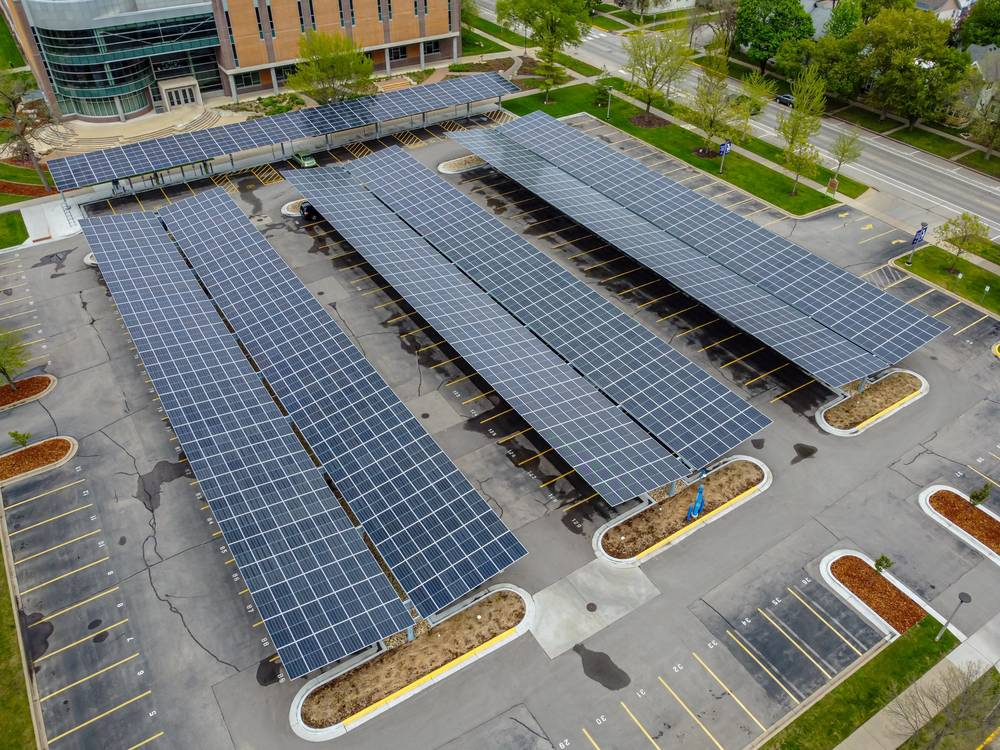

수원햇빛발전㈜ 밑그림 나왔다…공영주차장 13곳 5MW부터 20MW·328억 원, 공공 배당은 기후대응기금으로

수원시·수원도시공사·에너지협동조합 참여, 시민펀드로 이익 나눠…16일 수원시의회서 창립설명회
수원시가 공영주차장 태양광 설치 의무를 시민의 '햇빛소득'으로 바꾸는 주민참여형 특수목적법인 '수원햇빛발전㈜'의 사업 규모를 내놓았다. 전체 규모는 약 20MW, 총사업비는 328억 원으로 잡았고, 먼저 공영주차장 13곳에 약 5MW를 세운 뒤 공공건축물 옥상과 유휴부지로 넓힌다는 구상이다. 법인에는 수원시와 수원도시공사, 지역 에너지협동조합이 함께하며, 공공은 부지와 사업 기반을, 협동조합·시민·기업은 자본을 맡는다. 시민은 시민참여 펀드로 수익을 나누고, 공공부문 배당금과 공유재산 사용료는 시 기후대응기금에 넣어 에너지 복지와 탄소중립 사업에 다시 쓴다. 경제성 분석과 시민펀드 설계, 추진 일정은 16일 오후 2시 수원시의회 다목적실 창립설명회에서 공개된다. 주최 측은 설치 의무를 어떻게 설계하느냐에 따라 시민과 지역사회의 도시형 햇빛소득 모델이 될 수 있다고 설명했다.
시민에너지 관점
주차장 13곳 5MW는 한 해 약 600만kWh, 1,600가구 넘게 쓸 수 있는 전기를 만들 수 있는 규모로, 그 수익이 어디로 가는지가 도시 에너지전환의 성패를 가른다. 덴마크와 독일의 시민 발전소가 수십 년 버틴 것은 공공이 땅과 신용을 대고 주민이 출자해 배당을 받는 구조가 분명했기 때문이다. 공공 배당을 기후대응기금으로 돌리는 설계는 수익이 다시 시민에게 돌아가는 고리를 만든다는 점에서 의미가 크다. 남은 과제는 328억 원 가운데 시민펀드 몫과 이사회 안 협동조합 의석을 설립 단계에서 숫자로 못 박는 일이고, 16일 설명회에 시민이 많이 모여 그 숫자를 함께 정해야 한다.
출처: 뉴스파이어 2026-11-13 김대열 원문 보기
「水原ひだまり発電」の青写真…公営駐車場13カ所5MWから20MW・328億ウォン、公共の配当は気候対応基金に
水原市・水原都市公社・エネルギー協同組合が参加、市民ファンドで利益分配…16日に市議会で設立説明会
京畿道水原（スウォン）市が、公営駐車場への太陽光設置義務を市民の「ひだまり所得」に変える住民参加型の特別目的法人「水原ひだまり発電株式会社」の事業規模を示した。全体規模は約20MW、総事業費は328億ウォンを見込み、まず公営駐車場13カ所に約5MWを設け、その後公共建築物の屋上や遊休地に広げる構想だ。法人には水原市と水原都市公社、地域のエネルギー協同組合が加わり、公共が用地と事業基盤を、協同組合・市民・企業が資本を担う。市民は市民参加ファンドを通じて収益を分かち合い、公共部門の配当金と公有財産使用料は市の気候対応基金に入れ、エネルギー福祉と脱炭素事業に再投資する。経済性分析や市民ファンドの設計、推進日程は16日午後2時、水原市議会多目的室での設立説明会で公表される。主催者側は、設置義務の設計次第で市民と地域社会のための都市型ひだまり所得モデルになり得ると説明した。
市民エネルギーの視点
駐車場13カ所の5MWは年間約600万kWh、1,600世帯以上が使える電気を生み出せる規模で、その収益がどこへ向かうかが都市のエネルギー転換の成否を分ける。デンマークやドイツの市民発電所が数十年続いてきたのは、公共が土地と信用を提供し、住民が出資して配当を受ける構造が明確だったからだ。公共の配当を気候対応基金に回す設計は、収益が再び市民に戻る輪をつくる点で意義が大きい。残る課題は、328億ウォンのうち市民ファンドの割合と取締役会での協同組合の議席を設立段階で数字として固めることで、16日の説明会に多くの市民が集まり、その数字を共に決めるべきだ。
出典: 뉴스파이어 2026-11-13 김대열 原文を読む
“水原阳光发电”蓝图出炉…从13处公营停车场5MW起步，规模20MW、328亿韩元，公共分红纳入气候应对基金
水原市、水原城市公社与能源合作社参与，以市民基金分享收益…16日在市议会举行创立说明会
韩国京畿道水原市公布了居民参与型特殊目的法人"水原阳光发电株式会社"的项目规模，旨在把公营停车场安装太阳能的义务转化为市民的"阳光收入"。项目总规模约20MW，总投资328亿韩元，先在13处公营停车场建设约5MW，之后扩展到公共建筑屋顶和闲置用地。水原市、水原城市公社和当地能源合作社共同参与法人，公共部门提供用地和项目基础，合作社、市民和企业出资。市民通过市民参与基金分享收益，公共部门的分红和公有财产使用费则纳入市气候应对基金，再投入能源福利和碳中和项目。经济性分析、市民基金设计和推进日程将于16日下午2点在水原市议会多功能厅举行的创立说明会上公布。主办方表示，安装义务如何设计，将决定它能否成为惠及市民和社区的城市型阳光收入模式。
市民能源视角
13处停车场的5MW每年约可发电600万千瓦时，足够1,600多户家庭使用，收益流向何处决定着城市能源转型的成败。丹麦和德国的市民电站能延续数十年，是因为公共部门提供土地和信用、居民出资分红的结构十分清晰。把公共分红转入气候应对基金的设计，形成了收益重新回到市民手中的循环，意义重大。剩下的课题是在设立阶段就用数字明确328亿韩元中市民基金的份额以及合作社在董事会中的席位，希望更多市民参加16日的说明会，共同定下这些数字。
来源: 뉴스파이어 2026-11-13 김대열 查看原文
Suwon Haetbit Power takes shape: 5MW on 13 public car parks first, 20MW and 32.8 billion won in total, with public dividends going to a climate fund
City, Suwon Urban Corporation and energy co-ops join; citizens share profits through a fund — founding briefing at city council on Nov. 16
Suwon has set out the scale of Suwon Haetbit Power, a resident-participation special purpose company meant to turn the legal duty to put solar on public car parks into "sunlight income" for citizens. The plan envisages about 20MW in total at a cost of 32.8 billion won, starting with roughly 5MW on 13 public car parks before expanding to public building rooftops and idle land. The city, Suwon Urban Corporation and local energy cooperatives will take part, with the public side providing sites and the business base, and cooperatives, citizens and companies supplying capital. Citizens will share in profits through a citizen participation fund, while public-sector dividends and fees for using public property will go into the city's climate response fund for energy welfare and carbon-neutral projects. The economic analysis, fund design and roadmap will be presented at a founding briefing at 2 p.m. on Nov. 16 in the Suwon City Council multipurpose hall. Organisers said that how the mandate is designed will decide whether it becomes an urban model of sunlight income.
Citizen Energy View
Five megawatts on 13 car parks can generate around 6 million kWh a year — enough for more than 1,600 households — and where that revenue goes will decide whether the city's energy transition succeeds. Citizen power plants in Denmark and Germany have lasted for decades because the deal was clear: the public side provides land and credit, residents invest and receive dividends. Routing public dividends into a climate fund creates a loop that returns the money to citizens, which matters. What remains is to fix in numbers, at the founding stage, the citizen fund's share of the 32.8 billion won and the cooperatives' seats on the board — and the Nov. 16 briefing is where citizens should turn up and help set them.
Source: 뉴스파이어 2026-11-13 김대열 Read the original